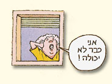

שלבי הגישור
- הכנה לגישור: מבחינת הצדדים משמעה הבנה לקראת איזה סוג של הליך ליישוב סכסוכים הם הולכים. הצדדים צריכים לדעת כיצד מתנהל ההליך וכיצד הם יוכלו להגשים את רצונותיהם במסגרתו. מבחינת המגשר משמעות ההכנה הינה התכוננות וקריאת חומר רלבנטי לסכסוך. חשיבה ותכנון של מהלך הגישור בהתאם למאפיינים הייחודיים של כל מקרה ומקרה.
- פתיחת הגישור: בשלב זה – תחילת ישיבת הגישור - מסביר המגשר לצדדים מהו גישור, כיצד יוכל לעזור לצדדים במסגרתו, ומהם הכללים עליהם כולם יתחייבו במסגרת הגישור תוך הסכם בין המגושרים למגשר על דרך העבודה המשותפת במהלך הגישור.
- הצגת הסכסוך על ידי הצדדים: מיד לאחר הפתיחה מציג כל צד את ראייתו הכוללת את הסכסוך. מהלך זה מאפשר לצדדים לפרוש את היריעה ולשתף בעובדות ובדברים החשובים ומפריעים להם. מכך לומדים הצדדים והמגשר רבות ומונח היסוד להבנות שיגיעו, ברוב המקרים, מאוחר יותר.
- זיהוי וחשיפת האינטרסים של הצדדים: הבנת האינטרסים של הצדדים למחלוקת הינה ליבו של הליך הגישור, המגשר בוחן עם הצדדים לעומק את מכלול הרצונות והצרכים של המעורבים בסכסוך.
- יצירת אופציות לפתרון: לאחר שהובנו האינטרסים ונאמרו הדברים על המגשר לעבור ממבט על העבר למבט אל העתיד, ולחפש עם הצדדים את הפתרונות האפשריים אשר יתאימו לרצונותיהם וצרכיהם, כפי שהובעו במהלך הגישור.
- סיכום וניסוח הסכם פתרון: המגשר בשיתוף עם הצדדים מנסחים את ההסכם שמסיים את המחלוקות. ברבים מהמקרים מוגש ההסכם לבית המשפט/ הדין למתן תוקף של פסק דין. לעיתים הצדדים מעדיפים לשמור את פרטי ההסכם בסודיות ואז מוגשת לביהמ"ש הודעה על סיום הסכסוך תוך השבת אגרת בית המשפט.